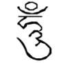
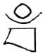
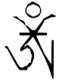
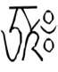

第三世多杰羌佛辦公室
（第十四號公告）
《極聖解脫大手印》
第三世多杰羌佛自降世以來，因緣所至，分別在藏地、漢地及西方世界傳授了不同派別、不同程度的眾多佛法，但是，對於第三世多杰羌佛這一世所傳的最頂聖佛法《極聖解脫大手印》（簡稱《解脫大手印》），儘管一些有緣的修行人早已開始修學了《解脫大手印》其中的部分，就已經取得了大成就，但是，絕大多數眾生仍然無緣得以親近《解脫大手印》。末法時代，妖邪騙子橫行，凡夫充聖遍佈，混入佛教，詐騙好人，為憐憫眾生求法的艱難，第三世多杰羌佛以始祖報身佛的佛境覺量，將多杰羌佛傳給阿彌陀佛等十方諸佛和大菩薩們在修行階段的最高佛法，示現給娑婆世界的所有眾生。今天，人類眾生的福慧因緣終於成熟了，《解脫大手印》中修行部分的最頂級無上的修行法，《暇滿殊勝海心髓》和《最勝菩提空行海心髓》終於得以公開面世，供所有善男信女修學行持、福慧圓滿而成就。為此，我們無限感恩第三世多杰羌佛和十方諸佛的加持！
必須說明的是，《暇滿殊勝海心髓》和《最勝菩提空行海心髓》不是《解脫大手印》的完整儀軌，而只是《解脫大手印》中的修行部分，至於《解脫大手印》中的修法部分，還要等因緣成熟再予傳授，但是，大家要明白，任何人如果不學修這兩部至高無上的修行心髓法，是不可能受到修法部分的傳授的，也就是說十分之一的希望都沒有，即使受到灌頂也不會有受用，因為《解脫大手印》的修法，乃至任何佛法的成就，都得依於修行，尤其是依修至高無上的兩大心髓更是重要，第三世多杰羌佛說，他一切行為的目的、他的宗旨就是依三大心髓，尤其這兩部心髓，無論什麼人，只要依修，如實而行，必然成為聖德，全世界的人類和其它眾生都會吉祥幸福永昌！！！
曾經有過不了解的某些人，認為《解脫大手印》是密宗，其實，這是完全錯誤的認知，因為第三世多杰羌佛是佛陀降世，佛陀是給一切眾生指明解脫的道路的，故《解脫大手印》不是密宗，也不是顯宗，不是大乘，也不是小乘。但是，無論你是唐密、藏密，還是東密，無論你是禪宗，還是淨土，無論你是唯識法相，還是南傳上座部的佛教徒，還是其他的任何宗教，只要是行善做好事、利益他人的人，就能依照《解脫大手印》修學行持，利他為業，得到快捷的解脫成就。正如第三世多杰羌佛所說的：“佛教的宗派是個別祖師形成的，大家想一想，釋迦牟尼佛是哪一個宗派的呢？哪一個宗派都不是，而是佛教。”所以，《解脫大手印》是屬於整個佛教，是佛教中最至高無上的頂級佛法。
第三世多杰羌佛針對《解脫大手印》特別指出：《解脫大手印》雖然是頂極中的頂極，至高中的至高，精華中的精華，它的誕生是為利益眾生而誕生，因此明確告訴大家，《解脫大手印》的流通弘揚，他是不會要大家任何供養的，只要一件，那就是真正利益眾生，福慧圓滿，早證菩提！
大家還要注意的是，修學完整的《極聖解脫大手印》的儀軌時，必須要首先看懂開初仁波且和祿東贊仁波且合著的《修解脫大手印必須要了徹的法義》，以資正見入修。
諸位行人，若能以上網傳播流通等各種方式弘揚《極聖解脫大手印》，使人人得利，個個成為德人，這將是具備無上功德的行舉，具大功德者，必然會早日獲得境行受用，當下證聖。
第三世多杰羌佛辦公室
二零一零年七月十六日
注：自下頁開始，便是第三世多杰羌佛親說最高古佛多杰羌佛的《極聖解脫大手印》之部分內容，即是修行的心髓部分，至於修法和灌頂、精要修等，不含在此法中。為尊法故，其文句排列最好不要變更，以防造成誤失。
解脫大手印（修法）
全文所有法本儀軌，是第三世多杰羌佛親說最高頂聖佛法，是諸佛之師法界總教主多杰羌佛的傳承。
極聖解脫大手印之殊勝處
極聖解脫大手印簡稱為解脫大手印，是所有佛法中最高無上大法。解脫大手印不是空洞的佛學理論，而是修學佛法的實證功夫，能實實在在讓大家看得到的聖量成就。是多杰羌佛傳給阿彌陀佛等十方諸佛和大菩薩們，在修行階段最無上的頂聖佛法，是一切修行人學修就會最快捷獲得幸福利益的妙寶。無論屬於何宗何派，灌過頂或未灌過頂，只要是如法修行之人，依法按照解脫大手印法本而學修行持，無論什麼人都能由金剛薩埵代擔你一生所犯下的罪業，乃至多生罪業皆由金剛薩埵承擔，讓你成為無罪之人，讓你快捷幸福美滿富，長壽無病常豐饒，智慧功夫大飛躍，脫離輪迴一切苦，快捷成就解脫有餘，乃至生死自由，自己選擇施展功夫，選升佛土世界或直升天堂。
其天國有上帝、基督、真主所居之天堂，佛土世界有十萬億嚴淨樂土（佛土），皆無有痛苦煩惱，唯有喜樂幸福，離我們最近的最低一層天國世界即是中天羅漢世界，處於無空氣層段眼所能見的群星球之中，域土大於娑婆世界數百倍，其神妙白色建築依寶山而建，形如金字塔狀。
極聖解脫大手印境行灌頂的特徵
要上師灌頂，公眾見真鋼，多人鑒證。
讓弟子受灌，當下證聖境，生起實相。
否則非至高，乃屬常規法，不是境行。
不合六資規，豈堪三師境，冒灌騙人。
（略去部分內容）
極聖解脫大手印儀軌法本中主要是由三大心髓圓成兩法，三大心髓即是根本上師海心髓、暇滿殊勝海心髓、最勝菩提空行海心髓，所圓成的兩法即是「福壽財富成就法」和「登地大菩薩成就法」。無論任何人，只要按照三大心髓如法修持，不需要任何上師，也不需要拜我爲師，不需要受任何灌頂，保證今生快捷福慧圓滿成就解脫。
解脫大手印的修法，除了分完整修、簡易修和至高無上的精中精修法以外，又分七種不同等級的修法和一種加持成就法：
第一種是受上覺道師資的境行灌頂修，
第二種是受中地道師資的勝義內密灌頂修，
第三種是受碩士道師資的內密灌頂修，
第四種是受顯密灌頂修，
第五種是未受過灌頂修，
第六種是無師教看法本儀軌自己修，
第七種是非皈依的人士按照法本儀軌入修。
除了以上七種成就大聖的修法外，另又有善道法，上覺道聖師以境行加持升天堂成天人、轉阿修羅法、再度投生人道法，雖然未證佛菩薩的成就，但確保生善道，如受到加持泥丸道果法而成天人，以爲在三善道中便利繼續修持如來正法，以防止墮入三惡道中。（略去部分內容）
唸誦四皈依或三皈依四遍
（皈依上師、皈依佛、皈依法、皈依僧）
梵音唸誦皈依：
南無咕嚕貝 南無布達耶 南無達摩耶 南無桑嘎耶
（略去部分內容）
前行二、暇滿殊勝海心髓
此時儘量把身體放鬆，仔細體驗我現住的世界本就是一場夢，一切都是無常不實的夢幻，而這一場夢很快就做完了，我今年多少歲了？我死的時候快到了，過一天就少活一天了，也許幾年，也許幾個月，乃至幾天，死的那一刻，當下就知道我做了一場夢，實際地回想，難道我不是正在無常中前進嗎？難道人的生死不是這樣嗎？一生勞苦奔波、擔憂、煩惱，一當斷氣死了，什麼也沒有了，這就是鐵定的結局，死後就回不到這場夢中了，就像我的前輩親人們一樣都回不到他們的夢中了，他們的骨肉都不存在了，無法與我相處經歷所謂的現實生活了，無法與我再同場共話了，他們對我而言，也只有在另一個世界回思，再也回不來曾居住的夢中人間世界，他們與我沒有辦法見面了，因爲他們對我已經成爲夢，就算轉輪投生另道，或生爲魚蝦，或牛豬雞鴨等，這時牠們認識我、叫我，可是我不認識牠們，牠們痛苦無比、傷心無比，乃至受到我的宰殺，我對他們已是夢，而我現在正在做夢，自己卻不明白，無論是榮華官貴、富商帝王、貧民布衣都是一場夢幻，這是鐵定的事實！！！這場人生之夢，飛速地前進無常很快就醒了，說不定就在不久我就要死了，我們隨時要體驗世間萬有確確實實本身就是夢，到我死的那一刻，我會真正的感到這不久前都還活生生的悲歡離合之鬧市夢已經就沒有了，原來一切都是假的。觀思鑒慮我今擁有暇滿人身，更逢佛陀正法，而只此一生哦，除了這一世，以後再也學不到真正的佛法了，事實就是這樣，對嗎？今逢之法是百千萬劫難遭遇的，我必須在今生學到正法，只有真正佛法能解脫我，而世間上的一切都是假的，並且必然是死無定期，不分老少年歲，死無定法，今年死，明年死，今日死，明日死，什麼時間我必須都是要死的，雖然我的身體康健，一代高僧大德身份，或家產豐登，萬貫資財，福祿壽喜，妻賢夫榮，子耀官貴，聲望高達，但死時我唯一帶走的只有悽伶孤獨，獨自一魂，飄蕩陰間，在人間的一切都帶不走，一無所有，這是鐵定的事實，對嗎？現在靜下心來真正想一想，比如就在這時我已經死了，怎麼辦？黃泉路上我沒有錢用，無有旅店，無有賓館，我今夜宿何家、吃何食？慘不忍睹，陰間心慌孤獨的恐怖無法想像，只要今生不成就解脫，這是我很快就要去面對的恐怖、鐵定的事實，任何人都改變不了的，就在前面等著我！！！加之我在爲人中有意無意傷害了無數的生命，行了種種的惡業而錯了種種的因果，必定要遭惡報的，如果今生我不藉此無上殊勝的因緣，不藉這個得逢如來正法的唯一機會真正修行，反而行自我欺騙而欺騙他人，那麼我必定會由於因果的關係，墮入極盛痛苦的地獄中的，這是必然的結局，自己問自己，是這樣嗎？答案是無可非議的，是絕對的，原因是我本人貪瞋癡傷害生命等造一切惡業構成的，故所以我要脫離這可怕的恐怖，現在唯一的出路只有精進勇猛地修持心行，嚴持戒律，發真實的菩提心，修真正的佛法，身口意實行一切的善業，大善、小善凡是善業我都要做，一切惡業，大惡、小惡我都不做、絕不沾邊，知道因果不昧，明信因果，但是見到他人遭惡時，我們必須要大悲爲本，見其生不忍見其死，見其好不忍見其壞，絕不可有分毫助成他人的惡果成熟，只能助成他人的善果行持，否則我已違背三聚淨戒，即成惡棍妖孽心行，必遭極盛恐怖悲慘。要息滅我的貪瞋癡，積累福慧資糧，於三時中觀念入於四無量心行的實踐中，願一切眾生永具安樂及安樂的因，願一切眾生永離諸苦及諸苦因，願一切眾生永具無苦之樂、種無苦的因，願一切眾生脫離貪瞋癡心住無執性空。（若專修福壽財富成就法就下接福壽財富成就法之正行本尊法，若只修登地大菩薩成就法，就直接下接最勝空海心髓）
以上修持是一定要付之實踐不能空洞的，故所以不可以用襌修觀，必須遷意修，這是非常重要而不能弄錯的。若有不慎，不明真理入於禪觀概念，這就脫離遷意修了，這樣就會建立無實行的菩提之果，而成空洞理論凡夫人士，戒慎！戒慎！非常重要的就是要遷轉意識入於實行，遠離襌修，遠離無相，遠離空性，實實在在地行，要實踐精進猛勇執著不放的實行戒體，建立真實大悲的菩提行舉，落實在一點一處言行上，實際面對一切眾生，得到遷轉意識修持行爲的真實境界，而不是坐在那裡思想空觀、入於襌修四大皆空、六塵不染無住無遷，只知住性入空，此際切不可空洞，要明白釋迦牟尼佛所說三藏十二部及其所說密典之法，其統攝只有兩個字「因果」，轉化兩個字有四個字「遷意行持」，受用四個字有六個字「慈悲智慧無礙」，這就是整個佛教的所用，至於般若空性真如法身，都是「慈悲智慧無礙」這六個字的功德所顯而證悟的本具性空，明白並證到這真理以後，這個時候又必須要放下遷意修了，否則落入有爲無常法中，到此境程度上馬上息止下來，從身心意識全資寂靜遠離遷意修，而要深入襌修，必須禪修，應無所住，四大皆空，到了此境程度才能造化勝義菩提心海聖境，若不如此，一起步就施用禪修，那是必然落入理論體見無實證量之中的，如此則會成爲口頭禪理論派，無非是佛教學者、成爲空洞的假聖德、法王、法師等，沒有實證功夫，乃至由於知見的不正，對經藏一知半解，久而習養滿口盡說經教論學之空理論本性，所謂無所得，不來不去，無色無相無取，不生不滅本具自性，究竟解脫，其實此類人頭，外表是威威大聖法王尊者，而實際是凡夫無實證量之人，此類人已落入斷惡見的無相坑中，永無解脫之期。
登地大菩薩成就法
二、暇滿殊勝海心髓（同前行二入修，也就是按照前面的暇滿殊勝海心髓儀軌觀修）
三、最勝菩提空行海心髓
法器：同前設置，起用、結束都與前面相同。
姿法：跏趺坐、大象坐、白鶴坐、金仙坐、大王遊戲坐、攤屍臥均可，待修熟練後，吉祥臥、行走、站立、生活等修持者均一樣功德如法平等無差。
深思觀鑒，思慮分析我的靈識，我爲什麼會說話、會做事、會思維、會分辨、會歡樂、會生氣、會造作一切？這是什麼起的作用，是什麼在指揮？這是什麼東西？是思想嗎？是精神嗎？是靈魂嗎？那麼思想精神靈魂又是什麼？說沒有但確實又有，就現在我就有，不然爲什麼我現在會分辨這解脫大手印中的義理，但是這分辨主是什麼？又看不到形相，摸不著東西，無論有神見、無神見、唯物論、唯心論，在現實中就是存在著這一看不到但依於表顯的真實的有，無論我是什麼觀點思想的人，至少也否認不了這是生命吧，這是能分別的思維吧，也就是存在著的人生意識，但是這都對又都不對，真實的叫執我的心，生死輪迴的我、意識。我們這場夢就是這意識帶給我的，是由意識執我所使而成，是意識執著其一切萬有而產生的幻有生死輪迴喜怒哀樂，那麼這意識不執著其這一切萬有的時候，意識在何處？這又是什麼概念呢？意識不執著於一切萬有之外境、內境而不昏沉的時候啊，當下就會清楚明朗，我們的心在何處？它不在內，不在外，沒有大，沒有小，沒有遠，沒有近，沒有肉身，沒有靈魂，沒有顏色，沒有形相，沒有天堂地獄，沒有痛苦，沒有生滅，也沒有空，根本沒有心的所在，這就是我與眾生的本來面目，這才是真正的我，無始以來的我，也就是無始以來的你，稱爲如來藏心，此心才是真正的不滅之我，無我之我，這個無有生滅的我就立名叫空性，這才是我與佛完全一樣同體的不生不滅的法身，法身與意識是一體的，也是相對的，識執幻有則是夢境中的凡夫我，識不染境，境不礙空，則是空性法身，而不是一切斷滅，什麼都沒有，猶如木石，而是什麼都有而不入斷滅，應無所住是爲真如，無礙之用則證聖量，聖量所顯即是妙有神通，也就是聖人的受用，解脫的世界。上述觀修以遷意修付之體念思慮奠定這一關鍵以後，我馬上要當下入於禪觀修持了，施以無罣礙的心，心放得輕鬆，什麼思維心也沒有，只有依法觀修的正念，身心放得輕鬆再輕鬆而不散亂。
此時切記慎之慎之，不可審辭思觀遷轉意識入行修了，要把遷轉意識入行修跟襌修理解清楚劃分開，這階段如果誤用遷意修將永遠都會住在凡夫境界中。行人若沒有因緣受到解脫大手印境行禪修灌頂者，就應住入常規禪修法，止觀於定，這時候就要真正的禪修。（略去部分內容）
若妄念生起坐不住時，則遷轉意識來深思，我們之所以有今天的人身和一切，皆因爲父母所生，父母教養、哺育我們，娑婆世界群情奮力，各功所能，辛苦勞累，功德巍巍，相互造就生活之園，隨處隨地皆是眾生功德所聚，我今方有安處，我今方有衣食，故一切眾生無始至此皆我父母，皆我親情眷屬，我們才有現在的身體、知識、能力、處境和諸有資糧、修學佛法的緣起等一切享受，而我的父母爲了我們辛苦勞累病痛，無私付出，他們的心思精力全是爲我耗盡的，應該說直至爲我活活累死，由於他們業力傷生害命等的因果之報，使無始劫的父母一直在六道輪迴中經歷種種急劇痛苦，他們由於爲了我而造下諸多罪業，因此他們正在變畜生、餓鬼、下地獄、入火海、上刀山、沉血河、剝皮、抽筋、挖眼、上人肉血磨、身體刀切兩段，悲慘無比，大聲哀嚎，痛叫：「我的兒！女兒啊！快救救媽媽吧！哎呀！哎喲！痛死我了！」哀聲慘然肺腑，求救於我，這時我感受如何，難道無動於衷，我將以何救之？我故必須成爲菩薩方可施救，遷轉意識深思，想清楚菩薩們是怎樣修成的？他們的體份是什麼結構組成的？唯有一條，別無二法：一切登地菩薩皆是大悲菩提心境，未犯一百二十八條知見，如法修行解開輪迴結而積聚之果，除此之外任何不淨業的成份都不在菩薩身上，法界中所有具備智慧神通者、身爲菩薩者，無有一聖不是大悲利眾，無有一聖不是捨己利他而登聖地的。凡只圖自己成就利益自己，不管他人痛苦皆是執我，凡未斷我執，表面學佛修行，實則生活於貪瞋癡三毒之中，無大悲之心的一切眾生，都是不具菩提種子的，其身心骨肉靈識沒有含藏菩薩的成份量，此類人等，行爲心思肉體皆是凡夫的結構，故所以只能住在生老病死苦無常凡夫世界中，三時無有停息地在地獄餓鬼呻吟痛苦積聚裏，長期無盡於六道輪迴世界中苦不堪言，輾轉不息度日，下場悲慘，爾際知悉痛苦中多生累劫的一切眾生與我皆互爲親眷，現在正在痛苦，上一世、幾世前、百千萬劫中，他、她都是我的父母，我當馬上施救，可我現在自身難保，憑我現有的傷害眾生等黑業也夠打入地獄，至少也要入餓鬼、畜生二惡道受惡報了，我怎麼辦呢？此時我必須遷轉意識，當下修七共加行，深思：人身難得、死亡無常、輪迴痛苦、因果必報、正法現前、斷我修持、自救救他，這七共加行觀透時，就此下定決心，放下我利益一切父母，先對如下次第施以大悲之心，觀家人、親眷、朋友、方神地神，隨著觀諸有眾生，再觀冤對、債主、壞徒、惡棍、厲鬼、子母夜叉、妖孽、邪魔，他們皆因無明造業而痛苦報應中，我今誓做菩薩，必須嚴持三聚淨戒，學佛菩薩之大悲行爲利益他們，讓他們的罪業由我來擔，讓他們的痛苦由我受，我的幸福快樂施予他們，教化他們改惡向善，利益眾生，要清清楚楚、明明朗朗地觀想，要發自內心非常自願誠意，不僅是觀而且要實在地做，不能有假念虛觀做做樣子，想到他們在刀山血流遍地，而這刀山由我代他們上，意念馬上跳入刀山上，我會痛苦無比血流遍地，他的罪全歸於我，他成無罪，他得到解脫，他改惡從善。想到他在火海中燃燒痛苦，大聲嚎啼，而我跳入火海，痛苦一樣無差，此時唸多杰羌佛心咒（七遍）
嗡 班雜爾打惹 吽吽
把他的一切罪全部接承下來，他此時頓然離罪跳出火海成爲無罪之身，快樂無比，再接著觀想所有眾生的一切痛苦災難化成黑毒之氣，從我自身白紅父母二脈由鼻孔處進入身內中央藍色本脈中，充遍全身，若能真心至極就可真實感覺到自身當下痛苦無比，此時若能手結交換惑業印，痛苦感覺立刻現前，說明自他交換菩提黑業法已經升起圓滿次第了，就此際一切眾生皆安樂舒服、愉快高興，我想到他們的快樂，爲他們感到高興，這要深悉體會，絕不可假想假觀。這時行人將左手拿鈴左右輕搖，男行人右手拿杵順時針旋轉，若是女行人左手拿鈴輕搖，右手拿偃月刀，刀口向上，此際持誦第一世多杰羌佛心咒（七遍）（嗡 班雜爾打惹 吽吽），咒音完畢，鈴杵或月刀放回墊布輪上。從我心輪出現粉紅色（吽）字如黃豆大，放光化爲藍色金剛總持佛，跏趺坐於心輪千葉紅蓮上之紅黃日月二輪墊中央，一面二臂，左鈴右杵，身如藍寶石色，放五彩強盛毫光勝於藍寶之光百千萬倍，奪目照射，從我頂門之頭骨開口處衝出（未開頂之行人亦復如是作觀），其光散發灌注所有黑業眾生的身體，一切眾生皆成光明之體，從此無有痛苦，這時我身上的黑氣罪業也由心輪多杰羌佛之強光逼散到皮膚下層無法出體，此時臍下三指處密輪，出現一團紅光猶如日之初升（受過境行法攤屍拙火定灌頂者，則觀是種子字所化的風火輪旋動風大，猛吹金剛種子而發火大三昧之光，若只修瑜伽拙火也作同樣修觀），智火熾燃，暖氣上升，似如烈火高溫，慢慢散布全身逼近皮膚，爾際毛孔定會發熱張開，一切黑氣業毒從其毛孔全皆流出，我身成爲光明藍色之體。（受到真正傳承佛法境行灌頂拙火成功時並守誓戒，就會清楚在密輪處，由種子字化顯之風火輪旋動升起金剛種子烈火高溫，如果我沒有修拙火定，也要作同樣觀想。）由於是因果使然不昧之道，故必然一切黑障回歸原來眾生各自的體旁，可這時佛光已經鎖定灌遍了眾生之體，黑氣惡業無有進入眾生體內的入口，故環繞一切黑業眾生體外盤旋不散，緊緊包圍，猛力擊碰，欲將藉機進入，我於此同時復將鈴和杵或月刀依法拿在手中，但切記不可搖動
滅罪咒：（此際唸滅罪咒二至七遍）
嗡 阿摩嘎 辛拉桑巴若以桑巴若以 巴若以巴若以 嘛哈修打洒埵 白嘛比布喀打襍 打若以打若以 洒門打 阿哇裸格得 吽丕娑哈 畧哀勒己遮哇擋 吽丕
持咒時同時觀想自身光芒散發，充遍三界六道有情的住所，猛疾如風吹擊黑暗障業之氣，猶如燈燃之火，被一口氣吹滅一樣，無形無蹤消失了，所有眾生自此得到了解脫，從此再無黑障盤繞，內外二障全皆清淨。（略去部分內容）。
由於我們多生累劫無始造下的罪業，故我們由無明煩惱中，隨時都會湧出三毒，那麼我們如何出沒於三毒水泡不受污染呢？凡是起一切利益自己貪心的時候，對瞋冤起念恨他人的時候，對離正念生愚癡邪見的時候，我們當下就起觀，清楚地想，發自內心自問，我是因地菩薩，今生必須成爲大聖，我必須以忍辱負重爲主，去掉自私的驕傲心行，要認清自己造過無數的罪業，無論我現在身份地位多高，也是與普通人一樣毫無價値的臭皮囊，同樣是在死亡道上前進的一人，所以我本來就是一個很普通的人、黑業之人，因此我必須是所有眾生的低下服務人員，爲他們效力這是我應該的，我沒有半點比他們高貴的地方。他人的幸福、金錢、財產、一切寶物，都是他人自己的因果福報帶給他們的。如果我有因緣與他相處在一起，或爲至親，或爲好友，我不能想他人快點死掉，把他人的財產歸於己有，而要祈禱他長壽無病，更不能設計去搶奪他人的財產。如果面對冤家對頭必將治我於死地的時候，我也不能怨恨他們快消失、快死，爲了我的安全，斷滅禍根，就沒有人害我了，讓他們死了才能免除我自己的災難，讓我得到好處，讓我輕鬆愉快，讓我幸福美滿，我不但沒有此念頭，並且要願這冤家他獲得平安幸福、愉快、長壽、無病，至於他們置我、害我的一切災難，毒謗我的一切手段就由我承擔，並且要把他們的三毒惡業無明的造罪和有意的惡業接收進我之身內，哪怕就是自己生不起攤屍拙火定就生密宗的瑜伽拙火驅業，如瑜伽拙火也生不起，或者沒有修過拙火定，他的一切罪業也要由我全部承擔，願他的三毒盡除，這才是自他交換菩提黑業的大菩薩行爲，同時在此也要盡力觀想，願一切眾生無貪、無瞋、無癡而無無明，無無明盡，去諸煩惱，真如現前，早證菩提。我在利益眾生施與菩提心行後，不要把對施給某眾生的利益記在意識中，不要記我已做了什麼好事，做了多少件好事，利益了多少位眾生，我要將利益一切眾生的心念轉爲勝義菩提心，自然地無執我功德，要明白這本來就是我應該做的，達到身口意三業就是利益眾生的自然本質，而不是故意要做好事，做多少好事給自己看或給他人看。
當我們做事不順利，別人傷害打擊誹謗，乃至欲治我於死地時，或傷害事業、家屬老小、親人，使其破財、害其生命之災難，身處痛苦時，我應當明信因果，一切惡報現前，皆因都是我無始造下之黑業，今爲償還報應，是還我自己欠下的債，不是害我的人造成的禍根，凡傷害我者皆是助我成道之緣起，此時鑒析菩提道果是忍辱第一，如果他人對我無謗、無瞋、無害，我怎麼練出忍辱性體無生證量？若遇冤對時，我還在生報復瞋恨，那麼這就是我執未斷，千萬要清楚明白，我之所以成爲輪迴眾生，無法脫離輪迴，原因在於我的生與死打成了結，這結就拴在輪迴柱上，輪迴結是怎麼形成的？我必須明白我執就是輪迴中的死亡結，輪迴死結是由自私集聚成的執我而打成的結扣，我執的表顯是多方無盡的，不易發現，必須迴光返照，總之其出發點都是自私而爲利我，就如得了重病時，我很痛，我的神經已經錯亂，我的五臟已經損壞，我的皮膚劇烈發癢，我現處於不治之惡病，我無法忍受，我冷、我熱，我血氣虛弱，我免疫力徹底衰退，這些不好的都不應該由我得，我不能爲了利益他人而傷害自己，這是我的，那應該也是我的，只要健康的、長壽的都是我要的，我要權，我要名，我要利，爲我而贏得一切好的，三時之中，我、我、我，現在是我，未來也是我，夢中也是我，只要是幸福好的都歸我，全都是我，這就是在打我執死結，這個結越打越多，是拴在輪迴柱上的一條繩打的連珠結，緊緊拴住我的八萬四千生死輪迴無盡命脈，我執重結扣打得緊，我執輕結扣打得鬆，只要是結就拴在輪迴柱子上了，多一次我執就多拴一道結扣，這就是輪迴的生命結——執我。如果我還在報復、瞋恨、怨懟等行爲，就在打結，就會將輪迴結向緊的方向拉，越拉越緊，越打越多，越是解不開、無法解，如若遇冤對等，不怨他、不責怪他，反而擔負他的一切黑業，就會將輪迴結放鬆、解開，越解越少，直至徹底全部解掉完，無有輪迴結存在，輪迴死結全部沒有了就無執我，於是我執就斷了，空性自然無礙現前，解脫輪迴自登聖位，三昧無礙智慧迎刃而生。若不解開輪迴結，我就會被拴在輪迴柱上，只能永住輪迴，受諸惡報痛苦。十方諸佛所教三界六道眾生的一切法，均是爲了讓眾生學會解開輪迴結放脫自己的生，解開輪迴結放脫自己的死，生與死放脫，凡夫的自己也就放開解脫了，就沒有我所執了，這就是斷執我，最後法執亦無，自然成就大聖菩薩，獲證無礙三昧神通自然。要注意的是在任何時候，上座修持、下座行業凡是私心爲我，皆在打輪迴結，只要打輪迴結就是進一步深入輪迴，鑄造堅實凡夫罪業痛苦殼的根由，凡是忍辱慈悲利他，自擔他人黑業者，皆是解開輪迴結步向解脫登地聖位的方向，實行菩薩的大悲行爲種因。三時之中要行持無論什麼人說我好、說我壞、謗我、害我、讚我，我沒有聽到，因爲我在學解開輪迴結，而不是帶頭以言行教眾生執我打輪迴死結。（以下是第三世多杰羌佛的心行）
十方諸佛演妙方
慚愧第三多杰羌
菩提捷徑我今說
輪迴死結必解脫
汝當諦聽三業行
可入勝義最上乘
我發願力言行出
兩排文句藏境覺
眾生的一切造業罪過由我承擔
我種的一切善業功德全給祢們
（以上是第三世多杰羌佛的行願，如果你願效仿就說明步上了菩提正道，境覺二行大法將會在你身上成熟。）
自他交換菩提黑業法必須是真修實行而不是依法本儀軌唸誦，若得真修自他交換者生起實相時（圓滿次第），有若干種感應，甚而會產生自身痛苦強烈，有生瘡惡病，有身如火燒，時如冰浸，時如抽筋，時昏死狀，時休克，時如刀割，全身各部種種不同輕重痛苦，但爲了六道父母，爲了我們了生脫死證得無礙登地菩薩，不可作禪修觀，必須以自他交換施以遷意修，付諸實踐，於三時中時時刻刻自願的、滿意歡喜，把增益好的給他，不好的給我，要理解若不如此，菩薩世界中則無我的席位，更不可能有我成佛的希望，建立真實菩提行，唯一如是要身口意三業行持，只是心觀念想是沒有用的，深入三業的實行，才不會成爲理論空洞假聖者。觀修實相成熟時，頂門會高溫發熱，光亮明顯，乃至頂門洞開，不需金剛換體禪灌頂，即能自成金剛換體禪開頂道行證量，若神識能出能入時，必須每到農曆十五日月圓之夜，自己用硃砂在白紙上書寫（榜）字一枚，火燒（榜）字淨水盡服，才會真正獲得實證聖量超然物外的真聖德，由是真實修持，自然就會快捷成就福慧二資糧，證果登地，這是本解脫大手印獨具快捷成就之妙寶法門修行精要部分。修到此際，我自身定然是業力黑障徹底圍困，身內、身外圍（違）緣充滿黑障業力，爲是積聚無上之痛苦，但是發自內心絕無半分毫後悔之念，而是滿意地認識到這是自己真正修行菩提黑業法入實相的境界。到了這時對勝義究竟菩提心同樣施以遷意修作爲基礎，勝義菩提心的修法，首先以遷意修回觀前行的理諦，要想人生本身是夢，我體自然是虛幻，幾天前做夢，我現在很多都已經回想不起了，幾年前經過的事，也有很多記不起來了，因爲這本來就是一場夢，而我們的身體和一切，都是幻有假合不實的，這之前做過的事都無影無蹤了，我們的祖輩們在哪裡呢？早已經不見了，這已經成了現實的夢，我們的曾孫、重孫們、末末塵塵們何在？還沒有出現呢！這本來就是夢，等到他們出現的時候，我們已經無常離開現有的這個夢鄕世界，那時他們對我也是夢，都是夢的追思回想而已，世間萬有都是短暫不實的，皆是無常幻有假合而成，夢幻泡影，如露如電，過去現在未來三時三世均無有實體，一切有爲法因緣和合假有顯，這是要認真好好靜心，回想這人生是夢的真真實實的實在性，爲此呢我誠心祈求解脫大手印現量大圓滿、金剛換體禪、非時之死迴生法、攤屍拙火定、未音禪、一味禪等之境行灌頂之一，而獲快捷即身證菩提，自覺渡眾生，法性真如本然空寂何有相，怎奈因果縛困四大假合身，輪迴死結必從善修得解脫，不入行德獨悟空性難登聖。（在此隨文體驗以下《解相偈》同樣施以遷意修，此際不可用禪修。）
解相偈：
我今宣說法中精 無上成就解脫心
佛言八萬四千門 條條法義渡行人
何謂最上菩提境 法性真如第一乘
我此略說無生義 解脫手印最爲尊
報化雖堪上部境 唯在化身渡有情
若要了生脫死行 素化無能避閻君
法身空寂無形影 油鍋刀山失本能
心外欲求解脫法 無奈殭屍送死城
執著幻化輪迴路 誤認凡藥甘露靈
定慧是日有進退 不可追思返本尋
縱犯黑業無明罪 當際悔過不思情
自他交換菩提心 解脫道上破暗燈
誤認意識作空性 自是黃泉路上行
錯當八識爲本心 輪迴根中不見真
當多遇見口頭禪 空頭教理語紛紛
呈請當面證量顯 無法施展妙有門
此屬禪和空俗子 汝若信受死爲根
善惡不著真不真 如來出顯影無影
不妄不真即是心 有情有樂生死根
若能了知幻化境 當下菩提相對因
任爾千般連山浪 亦是水性自顯成
妄起波瀾何所懼 不染一相即聖明
行住坐臥皆是境 勿追花紅柳綠燈
男女穿梭眼前過 未見有人入本心
不曾分別諸有相 晝夜如如般若明
上無諸佛下無生 三界諸法任運行
普渡有情無人我 大悲忍辱最益人
佛言雖有若干法 最上一乘無住心
本源無住西天佛 無量眾生皆具足
若能念起不追塵 自本彌陀生大樂
上乘利根可明了 必從善行生法出
最勝解脫無言喻 當體即空心即佛
將《解相偈》以遷意修入每句涵意，理解貫穿深考，體證《解相偈》的證悟力如若不決，在平時日常生活中，應助緣加入第三世多杰羌佛開示的三十多萬字的《心經講義》和心地法門及《僧俗辯語論》、《了義經》，予以遷意理解多多體悟，自然一定會受用無窮。（如果我已接受過境行灌頂，體悟法諦就非常容易了，因爲已從生起次第中深入。如果我已經證入覺行，就當下證到了無所不通，已是解脫的大成就者了，體悟法諦反成罣礙。）如果我自己對《解相偈》已經熟練，到了這時要徹底放掉遷意修，千萬放掉，必須轉入禪修，因爲遷意修是執我生法，但是在開始起修時必須要施用，原因是不執我則無文理法記，會造成義理不通，但一當法記文理清楚而此時必須離絕遷意修，這時我們所要證的是斷我忘法，我執不斷則輪迴鎖定，故所以爾際必須進入襌修，安住於禪定中。
體證《解相偈》，於禪修中獲證明空覺照，於是放下心來住於不染不執，念生起時不住念，念離散時不追念，念變換時不隨念遷變，保持輕鬆明澈無罣，不昏沈，不散亂，無所住，不著有，不求空，輕輕鬆鬆明而無執安住，於日常中儘量隨時入如是之住，自達流水三昧。（略去部分內容）
天眼通咒：（以菩提唸誦法唸——近乎默唸）（口訣略去）
天耳通咒：（口訣略去）
他心通咒：（口訣略去）
宿命通咒：（口訣略去）
淨壇咒：（三遍）
攘格攘辛西哇勒 覩把覩起爾 搓窩咕 納摩三摩多步達納 作體微拽娑哈 湯打格以寫嘛卻
（口訣略去）
要做七支供養，一者禮敬諸佛，二者廣修供養，三者懺悔諸罪，四者隨喜布施，五者法輪常轉，六者請佛住世，七者普皆回向。除此之外，我們每到一個新的地方住下時，我們要做一件重要的事，首先要修法給地方鬼神們供養食子，以上好食品招待他們，告訴他們我來到你們的地方住下了，打擾了你們，請你們明白我會給你們帶來利益的，並請你們護助幫我成就一切事業順利，使我無障礙圓滿道行佛法，我會把我修持的內外二業功德回向給你們，讓你們同享法量功德，得到福樂，得到解脫。要在同時向無始冤親債主供養食子，做食子品，還清他們的一切債障，以所修佛法功德回向給他們，願他們早得解脫。若不會修造食子，可拿上好食物供之，將食物觀種子字（嗡）白色，（啊）紅色，（吽）藍色三字從下至上在食物中放光加持，同時口中唸種子字三遍即發願作供。作供時唸供養食子咒，對手掌心吹氣一口，隨著將手掌心對食物順時針轉三圈
食子咒：（唸二遍）
（口訣略去）
唸咒後我要真心懺悔，凡所犯下的戒，從無始所造下的一切不利眾生之罪業，從此我無論處於何種狀況，我皆不再重犯，這時唸誦百字明咒（一遍）
嗡 班雜爾洒埵薩嘛雅 嘛努把拉雅 班雜爾 洒埵 得囉把底叉 只卓麥把哇 蘇埵喀約麥把哇 蘇波喀約麥把哇 阿努惹埵麥把哇 洒哇司底 麥札雅叉 洒哇嘎嘛蘇雜麥 資黨洗爾 養古汝吽 哈哈哈哈 火 把嘎哇納 洒哇打他 嘎打 班雜爾嘛麥母雜 班雜把哇 嘛哈洒嘛雅 洒埵阿 吽丕 埵杰生把拉恰扯
向金剛薩埵發誓，我從今日起，寧捨生命也不造罪業。（發下誓願後，必須於三時之中做到，方可種下真實菩提因，否則種下的是虛幻凡因種子，無法開花結果的，這是成就佛菩薩的關鍵心行，切記不可忽視。）發此真心時，金剛薩埵於其空中放出五彩強光，照射我身心，我的整個身體之一切罪業所化烏黑氣體全部被五彩光統攝，收入金剛薩埵身上，於是我無論曾經造下任何重罪或輕罪，所有一切業毒、一切債障，金剛薩埵都會全部承擔，而從此以後，我即是無罪之人，身心光明，福慧灌注，長壽無病，所行事業皆吉祥美滿幸福。注意如果是修現量大圓滿法的人，我的境界身心本來就處於光明世界中，由於此光跟金剛薩埵的身光是沒有差別的，因此呢這個時候我看到現前的光會無法分別哪一個是金剛薩埵的光，哪一個是我的光，所看到的光芒是混爲一體的，爲此只須將我擁有的現量強光，不存分別觀想加持一切罪業眾生成爲無罪之身善良德者，我的頭頂當下開口處生出（嗡）字迎請金剛薩埵進入我身內，由是佛慢即成爲金剛薩埵。這個時候應該持唸平日專修的護法聖或護法神之心咒，隨即供養護法品食子，唸誦食子咒（二遍）（口訣略去），對護法提出祈請，請恆不遠離常隨我身邊，助我消除一切內外障礙，圓滿無礙功德成就。無論我們在上座、下座平日生活起居，待人接物都要特別謹慎注意，自己的身口意三業要趨入實際行持，以菩薩行爲己行，處處時時以三聚淨戒爲指南，無論任何好處都要想與眾生分享，任何壞處都想自我承擔，無論任何壞事，大壞事、小壞事我絕不做，無論什麼樣的眾生，我都要用各種方法幫助他入門，到聞法點聽聞法音開示，盡其身心接引每一個人，乃至不認識的人，三時之中不要忘了利益眾生、渡眾生，學到真正的佛法，使他（她）得到幸福，而脫離邪說妖言和謗經誹佛以及一切邪惡毒害，反之對犯破戒罪或重戒之一切惡人假師毒妖邪魔鬼使之類呢，我們應以佛法降之，讓他改惡向善，但不可傷害使其身心壓力造成他的痛苦，及其眷屬的牽連痛苦，因爲他們也是愚癡可憐眾生，絕對不可有絲毫爲了自己的幸福快樂，把痛苦建立在他人或非人道眾生的身上。對於那些十惡不善，教化而不改悔、不回頭，繼續爲惡，殘害大眾之類，對此我們應化悲心爲降魔，施以菩薩戒，但這必須是爲保護大多眾生在無有另法解決的情況下，才能實行的誅法，因爲若不降誅此妖孽，這惡棍將會兇殘惡害更多人，若是善導此惡人仍不改悔其罪惡者，則報由政府法律機關制裁之，但是誅降妖孽的因果，我自己必須發心承擔，並且要以大菩提心將其誅殺之生，超渡轉生天道，成爲天人。如若這惡棍願改悔去惡從善，我們繼續施以菩薩戒對他誅之，即是我自己成了妖孽罪行，而此舉說明我已經脫離菩提道了，因爲無論是惡棍還是妖邪，都是眾生無明才造成的罪業，若能改悔惡行，宇宙中又多了一個好人、好眾生。總之在三時之中，包括睡眠中，我們都要考量把一切利益施給眾生爲目的，而如此將我們的身口意順化成實相菩提本質，除備行、前行、正行、結行的修持之外，我們必須要特別注意不犯正行中的一百二十八條邪惡知見和錯誤的知見，直到證覺行之後，一切皆成爲菩提善果，方可不受污染，否則墮落的根子由邪惡知見和錯誤知見而生，因此絕不可落入邪惡錯誤知見中，邪惡知見有哪些呢？
邪惡知見大概爲：（一邊誦一邊觀想對照自己的言行認知）
1認鬼神爲解脫主
2認神通爲成就目的
3認可破三乘戒律
4認脫離菩提心修行
5認戒律不需全部守
6認弘法可冒稱佛菩薩
7認常見爲實有非幻
8認空性離常獨立
9認只修法不修行得解脫
10認法身是有形相體
11認依佛力做壞事無罪
12認斷我執割離父母情懷
13認只要做好事就具聖涅槃
14認無大悲菩提心行是菩薩
15認不明信因果迷命理運氣
16認空諦說理離實修行持
17認六道輪迴是傳說不實
18認大喇嘛大和尚定大聖德
19認利益大於佛法
20認唸超度咒殺生無罪
21認逆行聖量菩提根本師定事
22認敬佛敬師不孝父母
23認地位身份不認了義法
24認眾生是佛退化成
25認佛法與外道混修
26認因果爲虛幻不實
27認怪力亂神爲佛法神通
28認學過大法之師必是大聖者
29認修行放在明日做
30認說假話騙眾生之師
31認有意對根本師打妄語會獲受用
32認無菩提心行的神通士
33認不具戒的法師、仁波且、居士
34認助邪師惡行是護法修持
35認依錯亂未通佛法之師不另求良師
36認有相計執布施
37認錯亂講經教不公眾懺悔
38認對徒自稱佛菩薩者
凡犯以上邪惡知見其中一條，察覺後沒有深切懺悔改正者，無論身份多高所修一切法皆無受用，更無道量功夫可言，永住輪迴，嚴重者必墮三惡道中，與他相達者，見他不改悔，若不離開，亦受同沾黑業之罪。
錯誤知見大概爲：
1認遷意修當禪修
2認坐禪是修行
3認結手印唸咒爲修法
4認修法是修行
5認硏究經教就是學佛
6認落邪惡、錯誤知見也會修成功夫
7認上師可對弟子無理要求
8認他邪說不讓眾生知
9認不修行求加持病愈
10認佛門丹丸可愈百病
11認剃度出家可吃葷
12認受大法灌頂不修菩提心
13認不持六波羅密
14認有最高的法相應一切眾生
15認他方遙控灌頂
16認只要做好事不修法也會解脫
17認爲斷我執不管他痛苦
18認悟空性與德量無關
19認具正脈傳承都是正派宗師
20認拿錢就灌頂佛法
21認大寺廟法承人定屬聖人
22認小寺廟無高僧
23認明心見性後鬆懈修持
24認事務輕鬆後再學佛
25認徒眾多者爲聖賢
26認無聖證量菩提心者爲真聖
27認不了義伏藏爲聖物
28認有意否認說過做過的事
29認故意隱瞞大聖德上師
30認持有金剛丸等五大丸就可成就
31認自己業力重無成佛種子
32認他道眾生無佛性
33認只要有法就會證道力
34認錯誤不當下糾正
35認行善布施者就是高僧大德
36認改編法本手印咒語
37認五明不在菩薩中得
38認上師可索拿弟子財物
39認借法脈傳承作弟子供養之器
40認自讚炫耀是德人聖典
41認子女不善導父母入正見
42認未隔石彩砂作壇冒稱聖壇城
43認大菩薩不如山神護力強
44認凡藥配製丸爲真甘露
45認閉眼所見之光是佛力顯
46認玄弄神奇空說法理不測金剛力
47認未受灌頂學法修行不成就
48認金剛菩提灌頂師無預言
49認皈依受戒後爲皈依境
50認不實虛幻圖影聲相是聖跡
51認密法最高
52認顯法最低
53認病者不須吃藥
54認唯有唸佛往生淨土
55認禪宗才能明心見性
56認頭上插吉祥草不見實相道果開頂
57認受法後證道量不知供養師
58認平淡五明是大聖德
59認有闡提心行者是高僧
60認體證明心見性不敬佛菩薩供像
61認大菩薩不生病
62認弟子坐高於上師聖德位
63認佛書佛像低安高僧大德座下
64認聖德不敬供方神地神
65認佛菩薩身份入廟不拜聖
66認眾生不具佛性
67認預言定年地球大難
68認身著出家披仁波且裝皆聖者
69認開示法音柔和定是菩薩
70認金剛聲開示除障不慈悲
71認金剛菩提行利他非聖德
72認我慢驕橫人是金剛師
73認依上師五十頌敬假聖師
74認脫離菩提心之師
75認持大法王認證文定是真聖
76認不可超渡惡鬼
77認魔妖不教化必誅殺
78認夜叉鬼子母不需供食
79認學法聞法人必拿錢換
80認聞法者輕慢法音
81認師把壽命轉給弟子
82認受學名寺定高僧
83認拜學多師必是聖
84認女眾不如男眾根器好
85認小眾生不如大生命
86認不解經文空洞念誦
87認借修道場佛塔法會私下斂財
88認利用布施救災款行貪
89認修行學佛必放棄勞動
90認皈依後就是佛教徒
敬誦至此小心自審，如果認同以上邪惡錯誤知見，馬上清楚我已經落入邪道和邊道中，應當下回頭，深切懺悔，否則很有可能一念落入邪惡見和錯誤知見而不改悔，終身墮落三惡道中，從此遠離正法之門，永斷解脫成聖之道。就只落入錯誤知見二、三條者，修學任何佛法皆無效應，一切功夫道力不見成果蹤影。自審無錯時，在言行上，時刻注意我的心行是否鎖在菩提心上，如果與菩提心相違背，立時懺悔，當下生起自他交換修持。（邪惡和錯誤知見熟誦後就不要每天唸了，但要隨時自審觀思，每一個月一定要隨文誦唸對照檢查一次。）自己無論何種痛苦降臨，立刻回觀，有很多人此時也在遭受與我一樣的痛苦，想得越深切越真誠越好，並且要發心自願的修持把他的痛苦全部接承由我擔負，讓他徹底無苦。凡是在我身上發生的一切不順利逆境、病痛、憂鬱、阻擋，他人攻擊、毀謗、玷污、殘害、困縛我身心時，我應此時清楚地明白這種災難現正發生在若干人身上，無數眾生身上，這些人正在受著完全與我無差別的痛苦，乃至比我更苦，我現在已屬於因地菩薩或登地菩薩，無話可說當下把他們的痛苦業力轉換在我身上，讓我痛苦，我不執著，全力擔負，讓他們得到安樂解脫。若我處在無痛苦或者全都是幸福快樂時，也要處處擔負他人的痛苦，當我只知醉迷在快樂中已經忘絕了擔負他人的痛苦，甚至不憐惜他的死亡時，說明我已經在得意忘形中脫離菩提道了，此刻已經失掉大悲菩提的心，這時我所修一切法都不會有受用了，原因在於傷了根本種子，離開了解脫聖路菩提道，走到支道上去了，此時應當下警覺，立刻回歸，發自心行自願。若此時菩提心生不起實相，就要明白想一個真理，百千萬劫就這麼一世人身，而且是遇上如來最高佛法極聖解脫大手印，實際修證的成就者們事例就在我的面前，聖德們所著的《修解脫大手印必須要了徹的法義》論述中實例記載，這絕不是其他任何空洞佛法能沾上邊的。這一法功力大得無窮，如果我失掉這一法就錯掉這一世，僅憑我曾種下的罪業，也不會再遇上這法緣了，更無機會圓滿領受境行灌頂，證到覺行成就了，今後只有墮到三惡道中，變三惡道的畜生餓鬼入地獄，所以我必須要放下自我的私心，立刻正念修持，趨心行入於菩提道上，發真實不虛的菩提心，行真實不虛的菩提行，趁今生的無上好法緣堅強意志力，精進實施自我的行持，我要與法界一切菩薩沒有差別，勇猛祈願請得灌頂極聖解脫大手印境行正等無上專修之法，速證圓滿道量，覺行大成就。
結行：
唸觀回向
今悟一切法軌義
念修行持諸功德
悉皆回向六道眾
願我速證無礙境
六道父母悉無餘
樂極長享壽不盡
同證不滅聖菩提
圓滿覺行金剛持
滿願咒：（唸速定滿願咒七遍）
達雅他 嗡 班雜爾予已雅阿瓦補達拉娑訶
此法本所有文字均來自《第三世多杰羌佛辦公室（第十四號公告）》，其文字和拼音由蔡于飛逐字反復校對，如發現文字或拼音錯誤，請聯繫zhmgczh@gmail.com。本文所有文字及讀音力求準確（梵音咒語除外，請按照梵語發音規則另行定音），其中文字和拼音參考中華民國教育部的教育部異體字字典和中文譯音轉換系統。